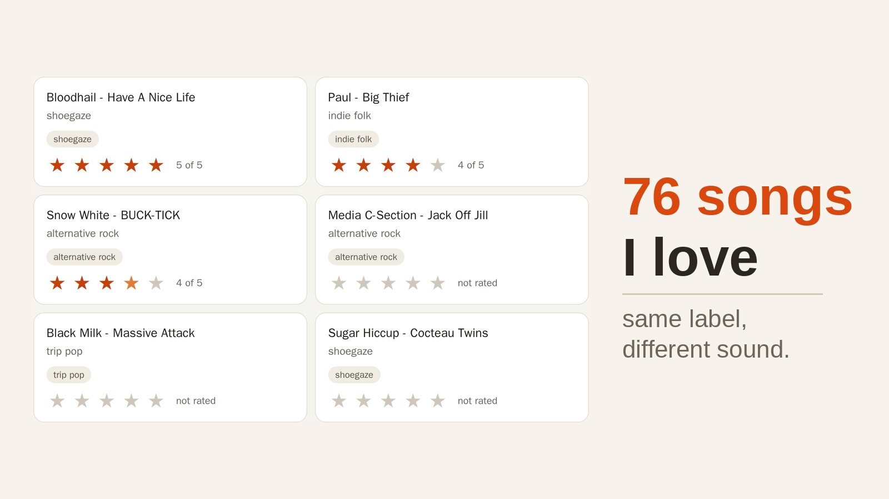
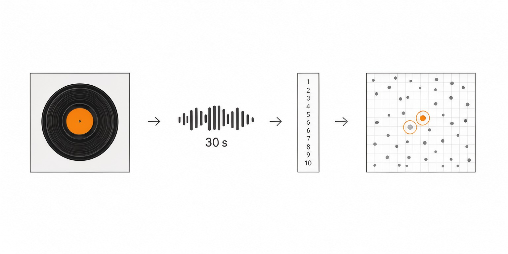
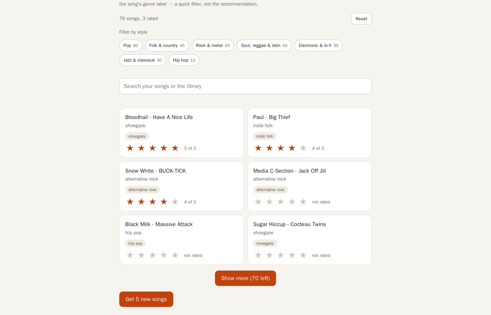

Five songs you rate 5★ in. Five new songs that sound like them out.
FRP 2026, AI Engineering track · ISSAI, Nazarbayev University
Rate what you love, press Get, and see songs that sound like it — with the reason written next to each one.

Music apps recommend from what millions of other people listen to, not from what you hear, so a listener with no history gets popular songs instead of personal ones. With one listener and a small library there is no other people's data to use at all.
I built a taste engine that compares songs by sound: every track becomes a vector with CLAP audio embeddings, your 1–5★ ratings become one taste profile, and the five closest unrated songs come back with the title of the liked song behind each pick. The library holds 376 songs in 19 styles: 300 new candidates and my own 76 songs.
I tested it two ways: two fixed profiles (a rock fan and a K-pop fan) to see if the picks stay in the right style, and three friends who hid three real favourites each in the unseen songs. In the friend test 6 of 9 hidden favourites came back in the top 5, where random picks would find about 0.15 of 9. When the picks were limited to each friend's own styles, the engine found 3 of 9, against 1.77 for random picks inside those styles.
Every 30-second clip becomes 512 numbers; your stars become one taste; the five closest songs come back.

CLAP turns a 30-second clip into 512 numbers. Songs that sound alike get similar numbers.
Your 1–5★ ratings become one taste profile: the average of the sound numbers of the songs you rated highest.
The five unrated songs closest to your profile come back, each with the liked song it is closest to: “because you liked …”.
300 library songs from public 30-second previews (18 styles × 15, plus 30 popular in Kazakhstan) and my own 76 songs. No audio files on this page.
Loud, fast, distorted guitars.
Korean pop: polished production, strong hooks.
Japanese pop of the 1980s: bright, smooth, nostalgic.
Quiet beats and soft textures for studying.
Popular songs in Kazakhstan.
Shoegaze, indie rock, alternative rock and more — my taste.
Style labels are the search words used on Apple's iTunes Search API; they are not expert labels.
Every result is compared with a baseline, so the numbers mean something.
Two shoegaze songs score 0.92 cosine; shoegaze against indie rock gives 0.76–0.79 (3 songs).
Rate 10 songs; the page hides your 3 favourites; the engine finds 6 of 9 in the top 5, random picks find 0.15.
The model in the page gives the same sound numbers as the GPU: cosine 0.998 on 4 songs.
Random picks find 0.15 of 9; inside the friends' own styles a simple rule finds 1.77 of 9.
| Friend | Found (of 3) | Random from their styles | Random from the library |
|---|---|---|---|
| Friend A | 2/3 | - | 0.05 |
| Friend B | 3/3 | - | 0.05 |
| Friend C | 1/3 | - | 0.05 |
| All | 6/9 | - | 0.15 |
Found = hidden favourites in the top 5. Random from the library = 5 × 3 / 293 ≈ 0.05 per friend. The style baseline was measured in a second test with three other friends: 3 of 9 vs 1.77 expected.
How many of the 3 hidden favourites appear in the 5 picks.
The hard baseline: 5 random songs from the styles the friend used, 1.77 of 9.
The easy baseline: 5 picks × 3 hidden / 293 unseen songs ≈ 0.05 per friend.
My real list: 76 songs with stars, style chips and the “Get 5 new songs” button.

Rate a few songs, press “Get 5 new songs”, or do the friend test. Works on a phone.
Three friends, 10 ratings each, and a 300-song library: the test is small. Clips are 30 seconds, so quiet intros and long build-ups are lost. Style labels are search words from Apple, not expert labels, and the second test used three other friends.
The numbers do not show how the engine works on a catalogue of millions of songs, or on a listener whose taste spans many styles.
Rate 3 songs, press Get, and read the reason on each pick.
6 of 9 found, 0.15 random, 1.77 for the same-style rule — all from results.md.
A bigger library and more friends, so the test stops being small.
@misc{tasteengine2026,
title = {Taste Engine: five songs that sound like yours},
author = {FRP 2026 student project},
year = {2026},
note = {FRP 2026, AI Engineering track, ISSAI, Nazarbayev University},
url = {https://fleshwater1876.github.io/taste-engine-page/demo/}
}